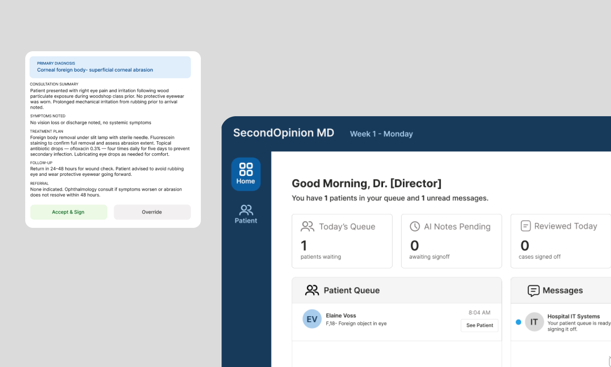
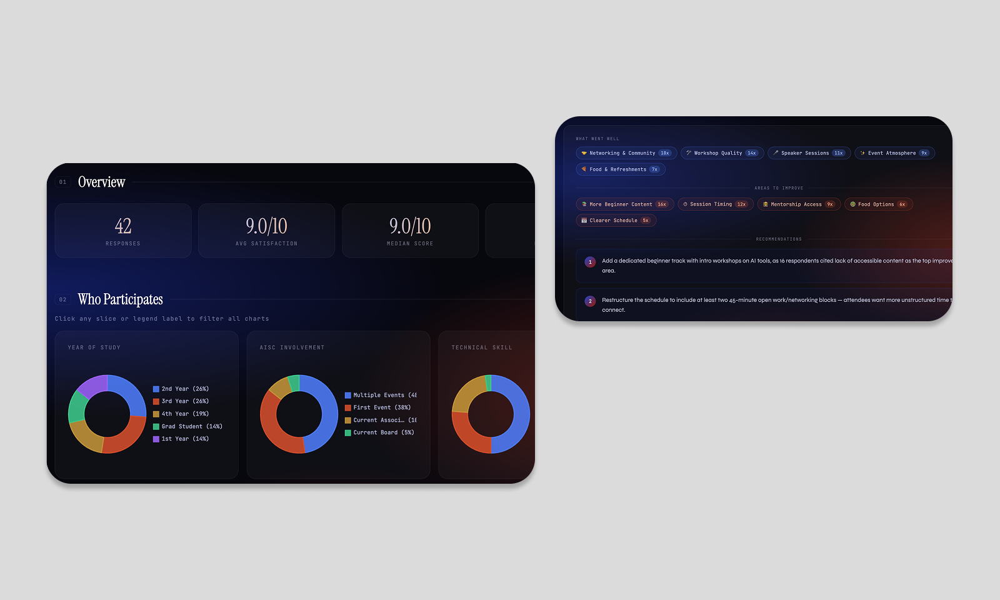

Good research tells you what to make. I do both.
A simulation game teaching medical students when to trust AI diagnostics — and when to override them. Research-led, interface-shipped.

An org serving hundreds of students per quarter had no visibility into what was working. I built the research infrastructure and AI tool that changed that.
